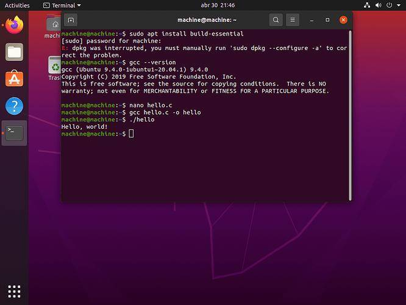

امروزه بسیاری از سرورها، ابررایانهها، تلفنهای همراه و حتی دستگاههای هوشمند از سیستمعاملی به نام لینوکس استفاده میکنند. اگرچه بسیاری از کاربران با ویندوز آشنایی بیشتری دارند، اما لینوکس به دلیل امنیت، سرعت و متنباز بودن، جایگاه ویژهای در دنیای فناوری پیدا کرده است
اگر قصد دارید در زمینه برنامهنویسی، شبکه، امنیت سایبری یا مدیریت سرور فعالیت کنید، آشنایی با لینوکس یکی از مهمترین مهارتهایی است که باید یاد بگیرید.
لینوکس یک سیستمعامل متنباز (Open Source) است که بر پایه هسته (Kernel) لینوکس توسعه یافته است. این سیستمعامل در سال ۱۹۹۱ توسط Linus Torvalds معرفی شد و از آن زمان تاکنون به یکی از مهمترین سیستمعاملهای جهان تبدیل شده است.برخلاف بسیاری از سیستمعاملهای تجاری، کد منبع لینوکس در دسترس عموم قرار دارد و توسعهدهندگان میتوانند آن را بررسی، ویرایش و بهبود دهند.
برخلاف بسیاری از سیستمعاملهای تجاری، کد منبع لینوکس در دسترس عموم قرار دارد و توسعهدهندگان میتوانند آن را بررسی، ویرایش و بهبود دهند.
لینوکس تنها یک هسته (Kernel) است و برای استفاده روزمره، نسخههای مختلفی به نام توزیع (Distribution یا Distro) ارائه میشوند.
برخی از معروفترین توزیعهای لینوکس عبارتاند از:
هر توزیع برای هدف خاصی طراحی شده است. برای مثال، Ubuntu برای کاربران عادی و برنامهنویسان مناسب است، در حالی که Kali Linux بیشتر در حوزه امنیت سایبری استفاده میشود.
یکی از مهمترین ویژگیهای لینوکس این است که استفاده از آن رایگان است و هر کسی میتواند آن را دانلود و نصب کند.
ویروسها و بدافزارها در لینوکس بسیار کمتر از ویندوز هستند. به همین دلیل بسیاری از شرکتها و سازمانها از لینوکس برای سرورهای خود استفاده میکنند.
لینوکس حتی روی سختافزارهای قدیمی نیز عملکرد مناسبی دارد و معمولاً بدون نیاز به راهاندازی مجدد، برای مدت طولانی قابل استفاده است.
بیشتر ابزارهای توسعه نرمافزار، زبانهای برنامهنویسی و فریمورکها روی لینوکس عملکرد بسیار خوبی دارند. به همین دلیل بسیاری از برنامهنویسان این سیستمعامل را انتخاب میکنند.
کاربران میتوانند ظاهر، محیط گرافیکی و امکانات لینوکس را مطابق نیاز خود تغییر دهند.
لینوکس تنها برای کامپیوترهای شخصی نیست و در بخشهای مختلف فناوری استفاده میشود:
هردو سیستم عامل مزایا و معایب خاص خود را دارند:
| لینوکس | ویندوز |
|---|---|
| رایگان | نیاز به لایسنس |
| امنیت بالا | هدف بیشتر بدافزارها |
| مناسب برنامه نویسی | مناسب بازی و نرم افزار های عمومی |
| متن باز | متن بسته |
| قابل شخصی سازی | شخصی سازی محدود تر |
در ابتدا ممکن است کار با دستورات ترمینال کمی دشوار به نظر برسد، اما با تمرین و استفاده مداوم، یادگیری آن بسیار آسانتر میشود. امروزه توزیعهایی مانند Ubuntu رابط گرافیکی سادهای دارند و برای کاربران مبتدی نیز مناسب هستند.

لینوکس یکی از قدرتمندترین و محبوبترین سیستمعاملهای جهان است که به دلیل امنیت بالا، سرعت، رایگان بودن و متنباز بودن، در بسیاری از شرکتها و مراکز داده مورد استفاده قرار میگیرد. یادگیری لینوکس برای دانشجویان مهندسی کامپیوتر، برنامهنویسان و علاقهمندان به فناوری یک مهارت ارزشمند محسوب میشود و میتواند فرصتهای شغلی بیشتری را در آینده فراهم کند.